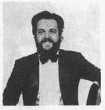

Daniel Rabinovich (Buenos Aires, 18 de noviembre de 1943 – ibídem, 21 de agosto de 2015) fue un actor y humorista argentino, integrante del grupo argentino de música y humor "Les Luthiers".
Trayectoria
En 1969 se graduó como escribano público, profesión que ejerció durante tres años. Perteneció al grupo Les Luthiers desde su fundación en 1967. Tocaba la guitarra, el violín e instrumentos de percusión, tales como el bombo legüero y la batería, además de instrumentos informales como el "bass-pipe a vara" o el "calephone". En 2012 se le concedió la nacionalidad española.2 Dueño de un gran carisma y sentido del humor, sus intervenciones en las actuaciones de Les Luthiers solían ser hilarantes y junto a Marcos Mundstock fue, quizás, el integrante de dicha agrupación más querido por el público.
Instrumentos
Informales
- alt-pipe a vara
- bass-pipe a vara
- Gaita de cámara
- calephone
- latín
Formales
- bajo eléctrico
- batería
- bombo legüero
- conga
- flauta
- guitarra
- melódica
- rototom
- sintetizador
- sousafón
- tambura
- tarola
- timbales
- trombón
- vibraslap
- violín
Libros
| Titulo del libro |
Editorial |
Ciudad |
Año |
| Cuentos en serio |
Ediciones de la Flor |
Bs. As. |
2003 |
| El silencio del final |
Ediciones de la Flor |
Bs. As. |
2004 |
Cine
| Año |
Titulo |
Rol |
Direccion |
| 1983 |
Espérame mucho |
Rissatti |
Juan José Jusid |
| 2007 |
Cine negro |
Entrevistado |
| 2007 |
¿Quién dice que es fácil? |
Simón |
Juan Taratuto |
| 2008 |
Bolt |
Voz de paloma, versión en español |
| 2011 |
Mi primera boda |
Rabino |
Ariel Winograd |
| 2012 |
Extraños en la noche |
Héctor |
Alejandro Montiel |
| 2015 |
Papeles en el viento |
Armando Prieto |
Juan Taratuto |
En Televisión
Participó de ciclos de humor:
| Año |
Título |
Canal |
Notas |
| 1989 |
Peor es nada |
Canal 13 |
Con Jorge Guinzburg y Horacio Fontova |
| 1991 |
Juana y sus hermanas |
Canal 13 |
|
| 1996 |
Continuará |
|
|
| 1996 |
Leche |
Canal UNO |
Director Bernardo Romero Pereiro |
| 1999 |
La Argentina de Tato |
Canal 13 |
|
| 2001 |
Tiempo final |
|
|
| 2006 |
Algo habrán hecho por la historia argentina |
Canal 13 |
Con Felipe Pigna y Mario Pergolini |
| 2011 |
Recordando el show de Alejandro Molina |
|
|
También en las series:
| Año |
Título |
Canal |
Notas |
| 2012 |
La dueña |
Telefe |
con Mirtha Legrand |
Salud y fallecimiento
En diciembre de 2012, mientras Les Luthiers se encontraba de gira por Uruguay, sufrió un infarto agudo de miocardio que lo dejó fuera en las últimas presentaciones. Cabe destacar que por muchos años Rabinovich padecía tabaquismo crónico. Pero estos problemas cardíacos nada tuvieron que ver con su muerte, que se debió a un cáncer con el que venía luchando en los últimos años. Falleció el 21 de agosto de 2015, a los 71 años.
Bibliografía
Masana, S.: Gerardo Masana y la fundación de Les Luthiers. Buenos Aires: Belaqva, 2004.
Samper Pizano, Daniel: Les Luthiers de la L a la S. Buenos Aires: Ediciones de la Flor, 2007.